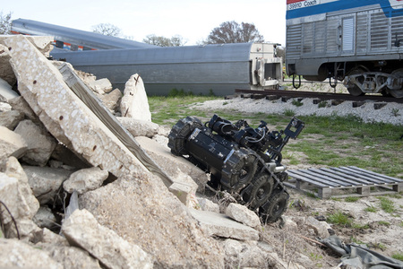

-

Howdy !
SSRR 2012 will be hosted this year at the Texas A&M. The 10th anniversary of the IEEE International Symposium on Safety, Security, and Rescue Robotics with continue its tradition of attracting cutting-edge papers in the theory and practice of robots for rapid and secure inspection of critical infrastructure, travelers, luggage, and paces; disaster response and recovery; humanitarian demining, disaster mitigation and recovery; detection of chemical, biological and radiological risks and operations in these dangerous sites; etc
- Selected papers will appear in IEEExplore.
- Outstanding papers with field results will be invited to the special issue of Journal of Field Robotics on SSRR
Supported by
- IEEE Robotics and Automation Society
- International Rescue System Institute
- Texas A&M University
Contact info
Alexander Kleiner (alexander.kleiner AT liu.se) and Robin Murphy (murphy AT cse.tamu.edu)Important Dates
- Jul 30, 2012
- Submission of proposals for tutorials, special sessions
- Aug 15, 2012
- Submission of regular papers, center/project papers, and visioning papers
- Oct 1, 2012
- Notification of acceptance
- Oct 1, 2012
- Submission of 2 page Late Breaking Reports
- Oct 22, 2012
- Submission of final papers
- Nov 5-8, 2012
- Symposium
News
- July 30, 2012
- Update program committee members.
- July 22, 2012
- Submissions page is available.
- June 11, 2012
- First version of the website is out.